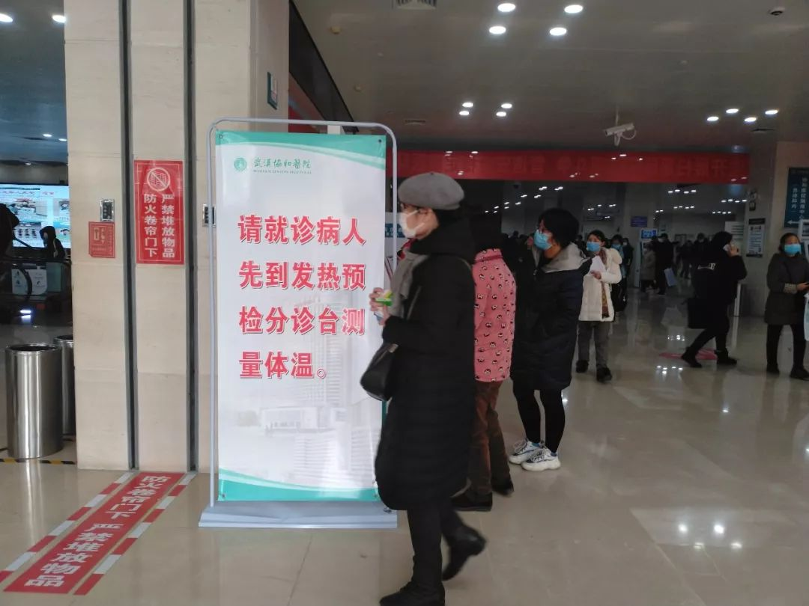
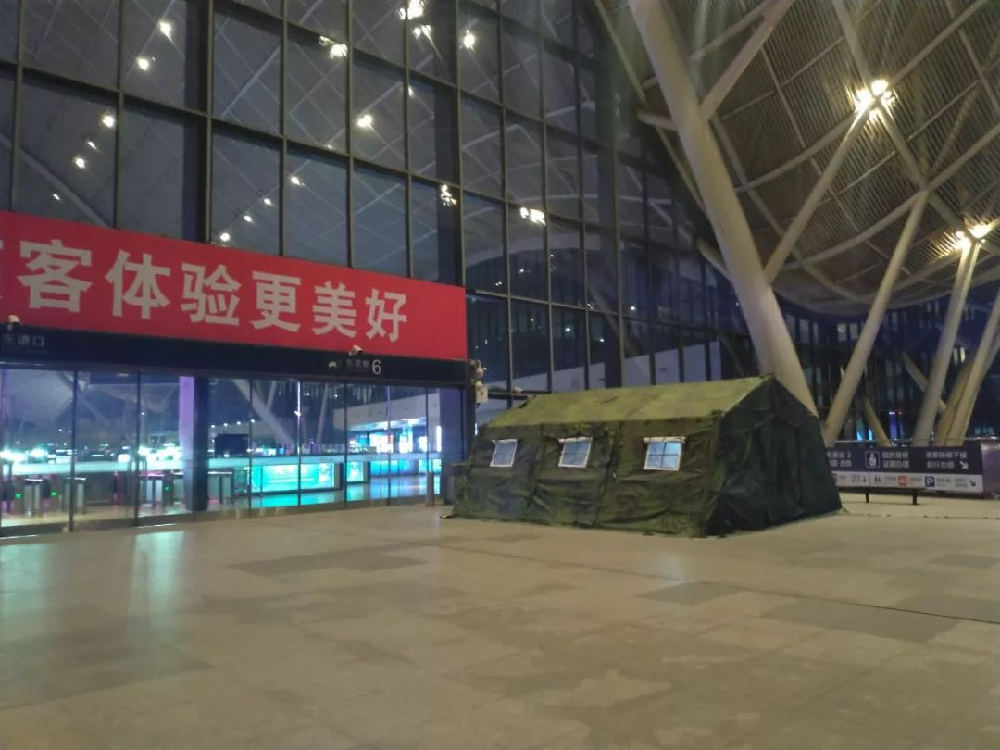
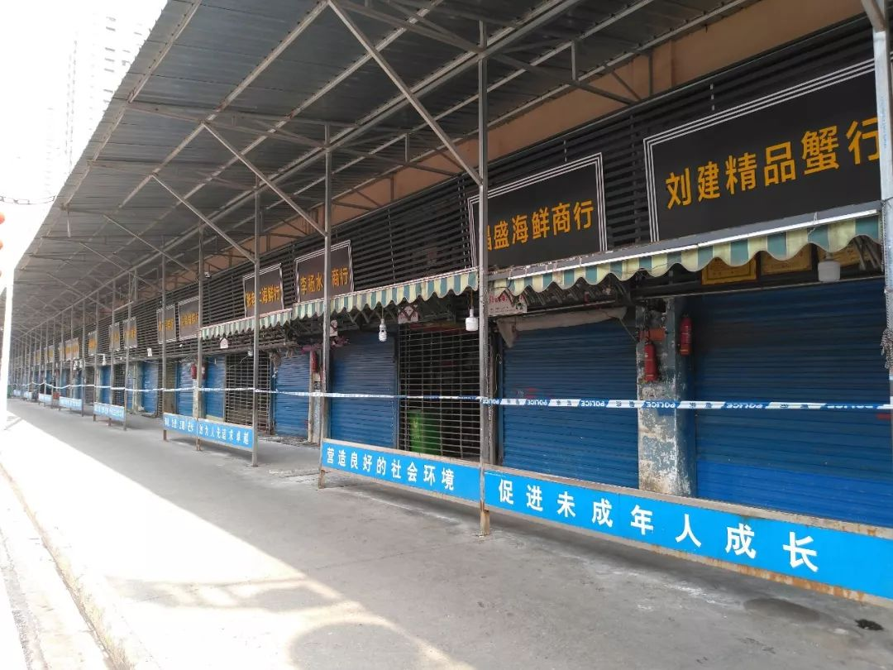
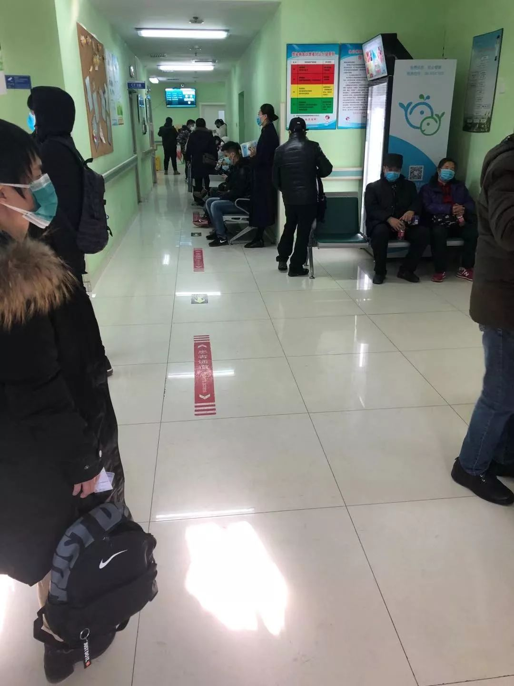

***
***武汉肺炎1天新增17例，为何内地其他城市没有报告病例？
原文链接 备份链接 武汉肺炎新的确诊病例突然增加了。1月17日新增17例，16日新增4例。 泰国和日本出现三例确诊病例，中国香港、越南、新加坡等地出现了疑似病例。 但内地在武汉之外没有报告，很可能是其他地区没有对该病毒进行检测。这种 …
***** *****
*****
*************协和医院发热门诊门口，排队患者人数较多，约为50多人，已经从门诊楼内排到了楼外的人行道上，一旁的输液室则有20多人排队。一位未佩戴口罩的患者进入楼内，立刻有医护人员向其发放蓝色医用口罩。*************

1月20日11时许，协和医院大厅内摆放着醒目的提示牌。新京报记者海阳 摄
文｜新京报记者 海阳 韩沁珂 梁静怡 张静姝 吴淋姝 姜慧梓
编辑｜王婧祎 潘佳琨 陈思 校对 | 郭利
►本文约5833字，阅读全文约需12分钟
短短30天，因为一场突如其来的肺炎疫情，江城武汉成为舆论关注的风暴眼。
从12月30日，武汉市卫健委发布通知，称市内部分医疗机构陆续出现不明原因肺炎病人，要求医疗机构及时追踪、统计、上报，到1月20日18时，武汉市累计报告新型冠状病毒感染的肺炎病例达198例，死亡3例，广东、北京、上海出现确诊病例，多省市出现疑似病例。疫情正在悄然扩散。
1月19日、20日，新京报记者实地探访武汉，这座处于肺炎疫情之下的城市里，高铁站、医院、最初的疫情发源地华南海鲜市场，市民原本的生活轨迹都发生了改变。相隔千里之外，在首都北京、特区香港，管理者也都为这场疫情启动了防控措施。
面对已经到来、即将掀起高峰的春运，这些城市是否做好准备迎接考验？
武汉
武汉高铁站：进站旅客需检测体温，询问有无华南海鲜市场接触史
*********** ***********
***********
1月19日22时许，新京报记者抵达武汉高铁站。随着列车进站、开门，一些下车的旅客戴上了口罩。记者在出站口闸机处进行粗略统计，在75位出站乘客中，有22人佩戴了口罩。通过攀谈了解到，不少旅客都是从北京回武汉过年。

1月19日22时许，武汉高铁站出站闸机处，仅有不到三分之一的乘客佩戴了口罩。新京报记者海阳 摄****
此前有武汉市政府相关负责人在接受采访时表示，机场、火车站、长途汽车站、客运码头等场所从1月14日开始安装红外线测温仪，加强离汉旅客的体温检测工作，对出现发热的旅客进行登记，并发放宣传册和口罩等，免费办理退票或者改签手续，指导转诊到辖区医疗机构，并进行登记报告。
在高铁站东侧进站口，新京报记者看到，检疫部门在此处搭起了一个迷彩帐篷。进站乘客需要在安检处经红外线测温仪检测体温，若体温偏高，会被引导至检疫点帐篷中进行进一步检查。在高铁站西进站口同样也有红外线测温仪。
新京报记者看到，帐篷中摆放着一张矮桌，上面摆放着消毒液、压舌板等医护用品。在一张体温异常旅客的登记表格上，已经记录了两个旅客的信息，体温分别是37.4摄氏度与37.6摄氏度。
帐篷角落处摆放着一张供医生休息的行军床。一位医生表示，自己来自一家社区医院，接到上级通知来到这里增援。此时已接近23时，该医生表示马上有同事来和自己交接班，会有医务人员在此通宵值守。

1月19日夜晚，武汉高铁站东侧入口处设置了一处预检点。新京报记者海阳 摄****
帐篷墙壁上贴着一张《武汉火车站发热旅客处理流程图》，要求“对发热旅客测量体温、体格检查（查看咽喉、心肺听诊）、询问有无华南生鲜市场接触史及确认病例接触史”，“如果无法排除该旅客的患病风险，将其送往华润武钢总医院发热门诊部进行后续处理。”
帐篷内的医护人员使用红外线体温计检查了新京报记者的体温，在确定体温没有异常之后，发放给记者一个N95口罩，并叮嘱多喝水、远离人流密集区域。
金银潭医院：只收治确诊病人，不允许家属探视
金银潭医院是湖北省、武汉市突发公共卫生事件医疗救治定点医院，也是湖北省结核病、人感染H7N9禽流感等疾病的定点收治医院。在此次疫情中，新型冠状病毒感染的肺炎患者会被送往金银潭医院集中收治。
1月20日上午9时，金银潭医院的大厅内空空荡荡，仅有寥寥数名患者，无论是发热门诊还是缴费处都没有排队情况，医护人员均佩戴N95口罩、医用发帽、一次性手套。发热患者需在金银潭医院大厅的分诊台登记个人信息，然后去发热门诊就诊。

1月20日，武汉金银潭医院，曾用名武汉市医疗救治中心。 新京报记者 海阳 摄
在发热门诊内，医生王红（化名）正在接诊一位病人，查看其肺部X光片，并询问其体征。
在得知该病人已经咳嗽、发烧了10天以后，王红表示，金银潭医院不能直接收治其住院。“一定是其他医院开个证明，认为你确诊（新型冠状病毒感染的肺炎）了，然后转过来。因为这里都是确诊病人，交叉感染的风险大很多。”
王红建议该病人去其他医院就诊，如果符合新型冠状病毒感染的肺炎症状，其就诊的医院会联系疾控部门来进行确诊。如果确诊为新型冠状病毒感染的肺炎，会转到金银潭医院集中收治。
她表示，“只要你确诊了，我们这里义不容辞地收，不可能推。”
1月19日，国家卫健委卫生应急办公室发布通告称，已经下发新型冠状病毒核酸检测试剂盒，要求各地加强检测，全力救治患者，及时发布确诊病例及疫情防控信息。
王红向新京报记者表示，她了解到，武汉的疾控部门已经开始使用上述试剂盒。她认为，近两日确诊病例数量大幅上升的原因之一在于试剂盒得到了使用。她希望能够将检测试剂盒发放到医院层面，有助于提高确诊效率。
王红提示，只要有持续高烧、咳嗽加重、胸闷气短等症状一定要去医院检查。
在金银潭医院的住院部，新京报记者看到，一楼入口处铁门紧闭，有戴着口罩的保安守在门前。墙上通知显示，每天16时至18时，住院患者的家属可以前来送东西，但不能进入住院病房内。该保安表示，住院患者不允许家属探视，而且，患者出院时需要重新买衣服，不得穿院内的衣服出院。
下午5点半左右，新京报记者在金银潭医院住院楼下看到，一些驾车前来的家属正将一袋袋生活用品交给安保人员，由安保人员带到病房。
一位患者家属表示，患者今年79岁，于三天前出现发热、咳嗽等症状，先在武汉市第四人民医院就诊，确诊患有新型冠状病毒感染引起的肺炎后，于今天送至金银潭医院住院治疗。
武汉协和医院：发热门诊排队50多人，医生呼吁就近治疗
1月20日11时许，新京报记者来到华中科技大学同济医学院附属协和医院，大厅入口处提示牌显示，“请先测量体温，正确佩戴口罩”，进门之后又有大幅海报用醒目的红色字体写着“请就诊病人先到发热预检分诊台测量体温”。

1月20日11时许，协和医院大厅入口处的提示牌提醒就诊患者先量体温，戴好口罩。新京报记者海阳 摄****
在大厅的发热预检分诊台前，同时测量体温的人数维持在二到三人，也有自己在家先行测量过体温的病人在填写个人信息后，直接前往发热门诊。
新京报记者看到，需登记的个人信息除了姓名、年龄、体温以外，还需要填写是否有华南海鲜市场和确诊病例的接触史。新京报记者注意到，大部分患者所填写的都是“无”。根据预检台前张贴的指南，如果患者体温超过38摄氏度，并有传染源接触史，“请转发热门诊就诊”。
协和医院发热门诊门口，排队患者人数较多，约为50多人，已经从门诊楼内排到了楼外的人行道上，一旁的输液室则有20多人排队。一位未佩戴口罩的患者进入楼内，立刻有医护人员向其发放蓝色医用口罩。
发热门诊内的医生穿着全封闭式防护服，连有封闭式头罩和胶靴。在发热门诊楼内，有一则大幅告示写着“因近期发热患者较多，接诊等待时间较长（1~2小时或以上）”。在“1~2小时”字样上又覆盖了一张新的A4纸，写着“因就诊患者较多，您可能需要等候3~4小时，请您耐心等候，或就近前往附近医院就诊”。
一位上了年纪的患者表示，自己体温不到37摄氏度，但感到手指关节有些疼痛，便被医生建议来发热门诊。还有一位患者体温为37.3摄氏度，属于低烧，也被建议来发热门诊。
一位协和医院的医生用手机拍摄着排队的景象，她向新京报记者表示，患者应该就近去其他医院看病，“所有医院都有发热门诊，与其在这里排4个小时队不如先就近治疗。”她表示，协和医院也不能确诊新型冠状病毒引起的肺炎，遇到疑似患者，需要联系疾控中心来确诊。

协和医院发热门诊外排着长队。新京报记者海阳 摄****
在协和医院附近的一家药店，工作人员表示，最近购买抗病毒药物奥司他韦的人数“超多”，需要凭医院处方购买。另一家药房工作人员则表示，不需要处方也能购买，但需要先登记。在填写完自己的姓名和电话号码后，新京报记者询问最多可以购买几盒，药店人员递给记者五盒。
华南海鲜市场：周边居民、商户未普遍戴口罩
1月20日中午，在华南海鲜市场，新京报记者看到，现场拉起了警戒线，每隔几十米就有几名警务人员看守。
华南海鲜市场南侧，一条马路之隔的其他商户正常营业。在一家水产店内，老板正在捡拾螃蟹，背后的墙上贴着“春节不放假”。这家店铺的工作人员说，疫情发生后，有疾控部门的工作人员来店内进行过检查，但他也不清楚具体的检查内容是什么。

1月20日12时许，华南海鲜市场东侧市场仍处于警戒线封锁当中。新京报记者海阳 摄****
新京报记者注意到，这些附近店主无一佩戴口罩。一间打印店的工作人员表示，疫情发生后自己泡了板蓝根喝，但没有佩戴口罩，“对自己的抵抗力比较有信心。”
在华南海鲜市场西市入口，新京报记者遇到了几位尝试进入市场取工具的摊主。门口值守的警察对其表示，要下午三点半以后才可以进入，但不许从里面取货出来。
在华南海鲜市场东北侧的万科汉口传奇唐樾小区，有居民表示，近期楼宇内电梯进行过消毒，“走进电梯还能闻到消毒水的味道”。记者在小区内发现，多数居民都没有佩戴口罩。
小区一位居民表示，海鲜市场关闭后，门口的道路环境好了很多，“平时每天凌晨3点钟开始，门口的道路就挤得水泄不通，污水横流，都是来送海鲜的。”
北京
首都机场：旅客自备口罩
**************************
1月20日12时许，北京首都国际机场T3航站楼内，一名男性旅客自称刚得知北京确诊两例新型冠状病毒感染的肺炎病例，随后在T3航站楼国际航班到达区附近一便利店购买了四个品牌的口罩。一名安检工作人员表示，目前未收到相关防控通知。
今日13时许，北京首都国际机场T2航站楼国内到达厅，一名正在执勤的戴着口罩的辅警称，口罩是统一发放，一般是在室外工作才会佩戴，主要是防雾霾。但今日得知北京出现“武汉肺炎”病例，便在室内执勤时也戴上了口罩。

首都国际机场T3航站楼，戴口罩的旅客。 新京报记者 李凯祥 摄
新京报记者注意到，航站楼内大多数旅客没有戴口罩。部分戴口罩的旅客表示，看到相关新闻后想做一些防护措施。
北京火车站：未增设测量体温环节
1月20日上午，新京报记者在北京西站进站大厅以及北京南站的进出站口和候车大厅内看到，安检流程同往常一样，没有增设测量体温的环节。
多名工作人员表示，暂未收到新型冠状病毒肺炎防控的通知。现场有旅客自行佩戴口罩，在过人脸识别安检门时短暂摘下，进站后又立刻戴上。
在北京南站部分便利店，防护口罩成了热销品。一名男子驻足柜台前看了许久，表示为了安全决定买一个口罩。便利店店员介绍，这几天口罩销量很好，今早尤其明显。

今日上午，北京南站便利店内，一位男士正在挑选口罩。新京报记者 张静姝 摄
中午，新京报记者来到永定门长途汽车站，看到进站口门外和候车厅挤满了人。有一名正在候车的旅客表示，今早看了相关新闻后有些担心，于是自备了口罩，“客流量这么大，应该多注意些。”现场除了来往旅客，车站的一些工作人员也自备口罩。
“非典”定点医院地坛医院
“非典”期间，北京有16家医院被列为定点医院，包括佑安医院、地坛医院、朝阳医院、小汤山医院、宣武医院等，其他医院收治的确诊“非典”病人都将转运到这些定点医院。
1月20日上午，新京报记者走访地坛医院发现，近期去过武汉并出现发热症状的患者，在分诊台做完体温、血氧、血压等检查后，会被带至旁边空无一人的肠道门诊进行单独集中候诊，由专人抽血、拍CT。

1月20日，地坛医院发热门诊，来到发热门诊的患者和家属都被要求带上口罩。新京报记者韩沁珂 摄
问诊医生除了询问症状，还会询问患者在武汉的逗留时间、活动范围以及是否接触过肺炎患者等内容。医生表示，普通感冒会在5-7天内痊愈，新型冠状病毒感染者的症状则会持续加重，并伴有缺氧等症状。
感染性疾病诊疗中心主任医师王华（化名）向新京报记者表示，从昨天开始，有部分近期去过武汉、身体出现发热等症状的患者前来就医。
一位近期去过武汉，目前体温37.2摄氏度、但无其他不适表现的患者前来就诊，王华建议其先回家进行观察，戴好口罩，尽量减少与他人接触，如病情加重再来医院就诊。“医院自己没有试剂，都是送疾控部门检测，（病人）在被动等待过程中聚在一起反而容易出现交叉感染，最安全的策略是自我隔离，先观察一下。”
王华表示，并非医院不接诊，而是需要将医疗系统资源集中在危重患者身上。他叮嘱病人，“如果出现持续发热或不适，一定要来医院就诊。”
王华介绍称，疑似病例需满足几个条件，包括14天内去过武汉、与14天内去过武汉的人接触、临床表现符合（白细胞下降、淋巴细胞减少、肺部异常）、发热等，满足上述条件者才会被作为疑似患者上报疾控系统，并送检鼻咽拭子，在等检测结果过程中，患者需留院观察。

1月20日，地坛医院，近期去过武汉且出现过发热症状的患者被要求到发热门诊旁边的肠道门诊留观室进行单独候诊，肠道门诊内并无其他人员。新京报记者韩沁珂 摄****
北京安贞医院：医院就诊人数未激增
今日上午，新京报记者在首都医科大学附属北京安贞医院获悉，该院已落实防控，对武汉回京且有发热症状的患者进行排查。
新京报记者在现场看到，北京安贞医院发热门诊外约有10余名发热患者排队等待就诊，不时咳嗽。就诊患者均佩戴了口罩，医护人员也佩戴了专用防病毒口罩。
其间，一名医生反复提醒医护人员和患者戴好口罩，“后面有一例要排查。”对于该病患情况，医生表示，医院已经启动筛查，“目前只要是从武汉回来，且有发热症状的患者都要排查，这是防控方案要求的。”

一名患者的化验单，检测项目与普通发热就诊的化验项目一致。新京报记者 姜慧梓 摄
接诊时，医生口头询问发热患者最近三周是否有外出旅行或居住史。从开具的血象化验科目来看，为血象检查和采集咽拭子等呼吸道标本，以及甲流、乙流病毒检测，与普通发热就诊的化验项目并无二致。
对此，医生表示，目前主要排查武汉回京的发热病例，但近期感冒多发，普通发热病例也较以往更多。
从血象报告可以判断疑似新型冠状病毒病例吗？医生表示，血象报告仅是一个参考，排查新型冠状病毒需要更多指标。
一名护士告诉新京报记者，北京通报发现两例新型冠状病毒后，当天发热门诊的就诊人数并未激增，“但也有人来为查个放心。”有患者表示，自己已经快好了，但以防万一还是过来检查一下。
香港
1月21日起武汉来港航班旅客须填健康申报表
**************************
针对湖北武汉出现的新型冠状病毒感染的肺炎情况，1月20日，香港食物及卫生局召开记者会通报最新情况，香港目前未有确诊病例，监测措施在不断加强，1月21日起从武汉来港航班旅客须填写健康申报表。新京报记者此前在香港探访发现，香港多所大学提醒师生做好个人卫生防护措施。
在记者会上，香港食物及卫生局局长陈肇始表示，截至1月20日8时，香港未有确诊病例，怀疑个案（即疑似病例）有106宗，病人年龄在1岁至67岁之间。所有呈报个案当中，有20人住院，其中18人情况稳定，而另两名一人危殆，一人严重。
陈肇始说，对新型冠状病毒感染的肺炎，香港当局采取的监控手段不断加强，原来只是曾到武汉并有病征人士需要被呈报，但现在，标准扩大到曾前往湖北省并有病征人士。1月21日起，所有从武汉到港航班的旅客均要填写健康申报表，留下联系方式，方便追踪。
卫生署署长陈汉仪表示，此健康申报表暂时仅适用于飞机旅客，这是考虑到可操作性问题。因为若各个口岸的内地旅客都要填申报表，“大量的人在一个时段（滞留）在一个空气不是那么流通的地方，对控制传染病未必是最理想的。”他同时表示，目前高铁口岸已增加手提仪器探测体温。
此前，香港特区政府已针对新型冠状病毒感染的肺炎启动“严重”应变级别，即三级（戒备、严重及紧急）之中的第二级。此外，香港已于1月8日刊宪，将“严重新型传染性病原体呼吸系统病”纳入《预防及控制疾病条例》下须法定呈报的传染病，并在当日生效。因此，如果已受感染或怀疑已受感染的病人不肯合作，比如拒绝接受隔离或拒绝进行检疫，香港卫生部门有权力对其采取强制措施。
1月13日，在国家卫健委的安排下，香港食物及卫生局副局长徐德义和卫生署及医院管理局代表，曾前往武汉了解武汉肺炎病例群组个案的情况、防控措施和临床处理。
*洋葱话题*
*▼*
*你在所生活的城市观察到了什么预防措施？*
*后台回复关键词*****“洋葱君” ，加入读者群****
***推荐阅读***

*********既然在看，就点一下吧****** *********
*********
原文链接 备份链接 武汉肺炎新的确诊病例突然增加了。1月17日新增17例，16日新增4例。 泰国和日本出现三例确诊病例，中国香港、越南、新加坡等地出现了疑似病例。 但内地在武汉之外没有报告，很可能是其他地区没有对该病毒进行检测。这种 …
原文链接 备份链接 新型冠状病毒感染肺炎疫情扩大。武汉本地两天新增确诊136例，死亡1例，治愈出院6例。 北京大兴区新增2例，有武汉旅行史；广东深圳新增1例，曾到武汉探亲。这是内地首次在武汉之外的城市报告病例。 国家卫健委卫生应急办 …
原文链接 备份链接 【财新网】（驻香港记者 王端）武汉新型冠状病毒肺炎患者有急剧增加趋势。 1月20日凌晨，武汉卫健委方面更新的数据显示，1月18日和19日两日共新增136名确诊患者。其中，18日增59人，19日增77人。武汉患者共198 …
原文链接 备份链接 2019年末，一场“不明原因”肺炎袭击湖北武汉。它由一种新型冠状病毒导致，而“冠状病毒”一词，唤醒了人们对16年前另一场影响深远的“不明原因肺炎”的记忆。中国的疾控系统再度面临检验。 2020年1月14日，世界卫生组 …
原文链接 备份链接 这一次的休市，几乎要使华南市场干货店老板曾嘉欣找不到生活的信念了。2019 年 11 月，因为一家卖辣椒等干货调料的商铺起火，曾嘉欣的商铺，以及铺子里 69 万的干货曾被付之一炬。借了贷款，用半个月的时间把商铺重新装 …